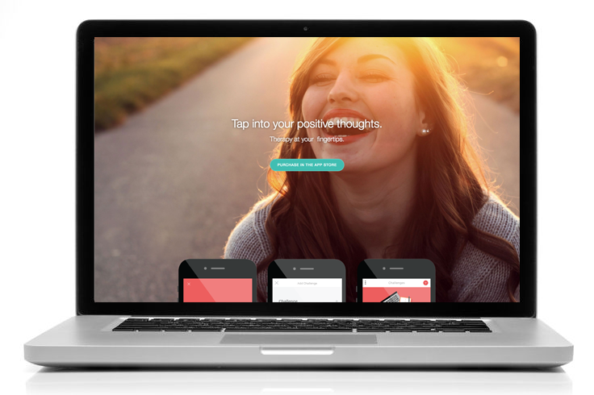

Fearless
Being anxious about an interview, presentation or a date are normal, everyday things. In contrast to being shy, those with social anxiety find their anxiety prevents them to complete everyday tasks.

These individuals experience fear or anxiety when doing simple things, like eating meals in public, going to the public washroom, talking on the phone and have an immense fear of being judged by others. They are terrified to take initiative, and have a lack of essential skills to any social performance, including appropriate eye contact, speech and behaviour.
I chose this topic because of the prevalent importance of communication in the design community. I wanted to speak for the people who are overlooked as simply being “weird” or “shy” because of their lack of social skills.
Causes of Social Anxiety
“In an Israeli study, people with social anxiety perceived themselves as having lower rank, more submissiveness and a smaller social network.” -Angst ( Jeffrey P. Kahn)
Based on my studies, people with social anxiety tend to have lower self esteem, and frequently tend to have social avoidance behaviours. For example, one might walk while looking down in the hope of being overlooked, or have a hunched posture to avoid being the center of attention. A small flaw they have could look like a disability or disfigurement to them, or a minor comment someone has said could bother them for months.
People with social anxiety also are heavily tied with perfectionists. They set such high standards for themselves, and kick themselves down if they fail to meet those standards.
It also could be linked to how they were brought up; helicopter or tiger parents could have a heavy link to their child’s social anxiety by feeding them overblown facts of the dangers in the world.
Cognitive Behavioural Therapy
Cognitive Behavioural Therapy is the most long-term effective method to aid or cure social anxiety. This form of psychotherapy identifies the negative thoughts and distortions an individual has inside their head, and attempts to replace them with rational and positive thoughts.
For Example, they are asked to put themselves in the shoes of another person. This helps them realize that other people are not as harsh as they think. A therapist may help the individual to come up with a positive phrase they can say repeatedly in their head to train them to think rationally at all times.
These negative thoughts are also known as “thinking traps.” They’re classified in several different forms, such as catastrophizing, all or nothing thinking, and more.
Solution: Fearless
Fearless is an app inspired by cognitive behavioural therapy. Based on my research, my completed app works as a digital therapist and positive thought enforcer. It works as a journal so users could record their fears, then reflect back on it with a rational and positive thought.
What I hope to achieve:
This app works as a journal or diary where they could vent out their thoughts, releasing extra stress in the process.
People rank their fears in 5 levels, categorized into anxiety intensity levels, making it easier for them to note what they fear the least and most. This makes it easier for them to identify and put more energy into their greatest fears.
People are challenged to approach everyday tasks with a positive outlook, minimizing anxious or negative emotions.